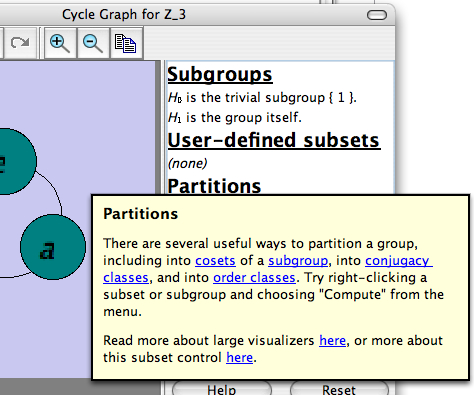

On all the large windows in Group Explorer, you will find a button like this  on the toolbar. This is the "What's this?" button. It allows you to ask "What's this?" about anything in that window. It is very useful for getting quick, short help on a specific button, image, or any type of control.
on the toolbar. This is the "What's this?" button. It allows you to ask "What's this?" about anything in that window. It is very useful for getting quick, short help on a specific button, image, or any type of control.
Begin it by clicking the "What's this?" button. Your mouse pointer will then have a question mark next to it, as shown in the icon  . This means that the next thing you click on will not work as if you had really clicked on it, but will instead describe itself to you, answering the question "What's this?"
. This means that the next thing you click on will not work as if you had really clicked on it, but will instead describe itself to you, answering the question "What's this?"
For instance, if you click the "What's this?" button and then click another toolbar button, like Copy , the copy command will not be performed, but you will receive a quick balloon of help about the Copy command. Here is a screenshot of balloon help for the Partitions section of the subset control.
, the copy command will not be performed, but you will receive a quick balloon of help about the Copy command. Here is a screenshot of balloon help for the Partitions section of the subset control.

As you can see, these balloon help documents are short (in fact, this is one of the longer ones!) but they may contain links. Clicking such a link opens a real help document at the place described by the link.
For this reason, if you are confused about a particular control on a particular window, sometimes using "What's this?" help is the quickest, easiest way to go. It prevents you from searching through the whole User Manual for one small piece of information.
Not all windows in Group Explorer have "What's this?" functionality, but all the large ones do.
Quick help links:
Contents | Getting Started | Tutorials | User Manual | Miscellaneous Reference
GE terminology | Help on help